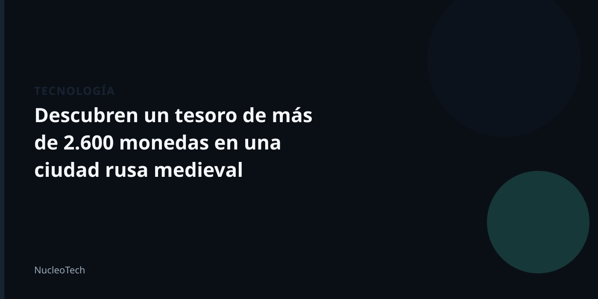

Un tesoro perdido durante siglos
En el centro histórico de Kolomna, una ciudad rusa a unos 100 kilómetros al sureste de Moscú, un equipo de arqueólogos ha realizado un hallazgo excepcional. En un cántaro de cerámica que permaneció intacto desde comienzos del siglo XV, se han encontrado más de 2.600 monedas de plata.
La suma equivalente a aproximadamente 13 rublos, poco más de 10 céntimos de euro, es un auténtico dineral para la época y que permitirían comprar un par de casas o un rebaño de caballos. Su valoración actual rondaría el medio millón de dólares.
La mayoría de las monedas fueron acuñadas en las décadas de 1420-1430, durante el reinado de los grandes príncipes Basilio I Dmítrievich y Basilio II el Oscuro. Además, hay ejemplares raros y valiosos entre ellas.
Este hallazgo es especialmente interesante porque nos permite conocer más sobre la economía y la vida en una ciudad rusa medieval. También nos recuerda que, a pesar de lo que creemos saber sobre el pasado, siempre hay sorpresas esperando ser descubiertas.
Un contexto histórico
La ciudad de Kolomna ha sido un lugar importante en la historia de Rusia, ya que fue fundada en el siglo XV y ha sido un centro de comercio y cultura durante siglos. La presencia de este tesoro en la ciudad nos da una idea de la riqueza y la prosperidad que se experimentó en esta región durante la época medieval.
Este hallazgo también nos recuerda que la arqueología es una herramienta valiosa para entender el pasado y descubrir nuevos secretos. Los arqueólogos siguen trabajando para descubrir y restaurar estos tesoros, y esperamos que este hallazgo sea solo el comienzo de una nueva era de descubrimientos en la historia de Rusia.
En resumen, el hallazgo de más de 2.600 monedas de plata en Kolomna es un descubrimiento emocionante que nos permite conocer más sobre la economía y la vida en una ciudad rusa medieval. Es un recordatorio de que siempre hay sorpresas esperando ser descubiertas y que la arqueología sigue siendo una herramienta valiosa para entender el pasado.
- La ciudad de Kolomna ha sido un lugar importante en la historia de Rusia.
- El hallazgo de este tesoro nos da una idea de la riqueza y la prosperidad que se experimentó en esta región durante la época medieval.
- La arqueología es una herramienta valiosa para entender el pasado y descubrir nuevos secretos.